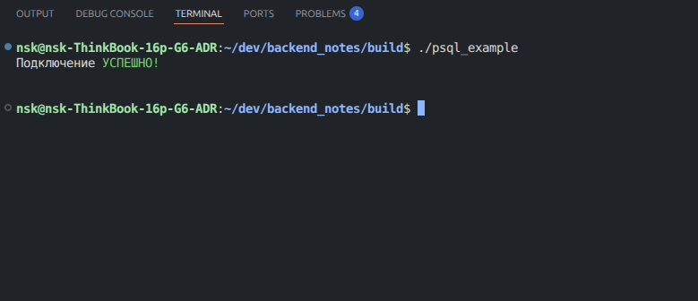
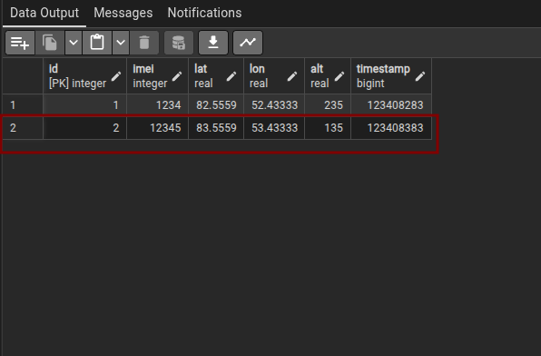
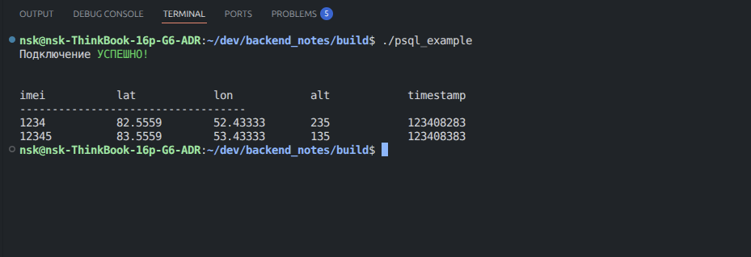

Clang + PSQL
Пример взаимодействия приложения на языке СИ с базой данных PSQL. В этом нам поможет библиотека libpq, поддерживаемая разработчикеами PSQL.
Полный пример взаимодействия с базой данных - здесь
Установка и подключение библиотеки в CMake
Устанавливаем:
sudo apt install libpq-dev
Подключаем в Cmake (пример для простого main.c):
# Ищем пакет PostgreSQL (в котором есть libpq)
find_package(PostgreSQL REQUIRED)
# Создаем исполняемый файл
add_executable(main main.c)
# Линкуем к исполняемому файлу `main`
target_link_libraries(main PRIVATE PostgreSQL::PostgreSQL)
Взаимодействие из кода СИ
Имя базы данных и кредиты пользователя сохранились из предыдущей “лекции”.
Пример подключения к БД
/*
@author: https://github.com/FacelessProfile, Никита Шаламов
*/
#include <iostream>
#include <chrono>
#include <thread>
#include <cmath>
#include <libpq-fe.h>
#define HOST "localhost"
#define PORT "5432"
#define DB_NAME "test_db_from_psql"
#define DB_USER "postgres" //по умолчанию postgres
#define DB_USER_PASSWORD "postgres1234" //Пароль от DB_USER
int main(int argc, char *argv[]) {
PGconn *con; // обьект подключения
PGresult *res; // результат запроса к базе
const char* info = "host=" HOST " port=" PORT " dbname=" DB_NAME " user=" DB_USER " password=" DB_USER_PASSWORD;
con = PQconnectdb(info); // Выполняем SQL-запрос из переменной info
if (PQstatus(con) != CONNECTION_OK){ // если подключение не удалось пишем ошибку
std::cerr << "\033[31mОШИБКА\033[0m подключения к БД.\n" << PQerrorMessage(con) << "\n";
PQfinish(con); // рвём подключение перед выходом
exit(1);
} else {
std::cout << "Подключение \033[32mУСПЕШНО!\033[0m\n\n" << std::endl;
}
return 0;
}
Результат:

Добавляем данные в таблицу
const char* test_data[] = {"12345", "83.5559", "53.433332", "135.0", "123408383"};
std::string query = std::string("INSERT INTO ") + std::string("user_equipment") + "(Imei, Lat, Lon, Alt, Timestamp)" + "VALUES ($1, $2, $3, $4, $5)";
PGresult* insert_res = PQexecParams( // передаем параметры отдельно для защиты от SQL injection
con, // наше установленное соединение
query.c_str(), // строка запроса с таблицей в БД
5, // количество переданных параметров
NULL, // типы данных (NULL - автотипизация)
test_data, // массив с данными
NULL, // длины данных
NULL, // формат (0 - текст)
0 // результат текстом
);
// проверяем успешен ли запрос на добавление в базу
if (PQresultStatus(insert_res) != PGRES_COMMAND_OK) {
std::cerr << "\033[31mОШИБКА\033[0m:" << PQresultErrorMessage(insert_res) << "\n";
} else{
std::cout << "Вставка произошла \033[32mУСПЕШНО!\033[0m\n";
}
PQclear(insert_res);
Результат:

Получение данных из таблицы
PGresult* res = PQexec(con, "SELECT Imei, Lat, Lon, Alt, Timestamp FROM user_equipment");
// Check the query status
if (PQresultStatus(res) != PGRES_TUPLES_OK) {
std::cerr << "\033[31mОШИБКА\033[0m:" << PQresultErrorMessage(res) << "\n";
PQfinish(con);
exit(1);
}
// Получаем количество Столбцов, полученных при запросе
int nFields = PQnfields(res);
// Выводим на экран названия столбцов, полученных в запросе
for (int i = 0; i < nFields; i++) {
printf("%-15s", PQfname(res, i));
}
printf("\n-----------------------------------\n");
// Выводим значения во всех строках каждого столбца
for (int i = 0; i < PQntuples(res); i++) {
for (int j = 0; j < nFields; j++) {
// Проверка на NULL
if (PQgetisnull(res, i, j)) {
printf("%-15s", "NULL");
} else {
// Получаем значения
printf("%-15s", PQgetvalue(res, i, j));
}
}
printf("\n");
}
Результат:
